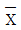
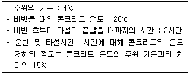
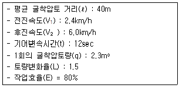
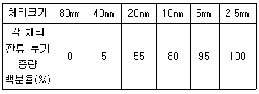
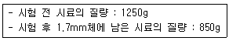
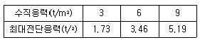
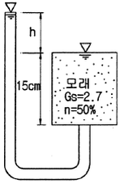
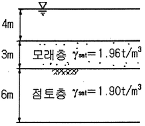
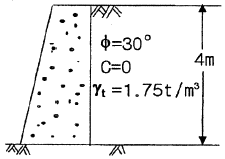
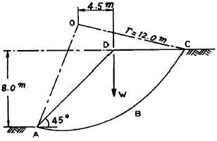

건설재료시험기사 (2009-08-30 기출문제)
1과목: 콘크리트공학
1. 일반적인 수중콘크리트에 관한 설명으로 틀린 것은?
- 물-시멘트비는 50%이하, 단위시멘트량은370kg/m3 이상을 표준으로 한다.
- 잔골재율을 적절한 범위 내에서 크게 하여 점성이 풍부한 배합으로 할 필요가 있다.
- 수중콘크리트의 치기는 물을 정지시킨 정수 중에서 치는 것이 좋다.
- 강제식 배치믹서를 사용하여 비비는 경우 콘크리트가. 드럼내부에 부착되어 충분히 비벼지지 못할 경우가 있기 때문에 믹서는 가경식 배치믹서를 사용하여야 한다.
(정답률: 60%)

2. 다음 중 프리스트레스콘크리트에 대한 설명으로 옳지 않은 것은?
- PSC그라우트에 사용하는 혼화제는 블리딩 발생이 없는 타입의 사용을 표준으로 한다.
- 강재의 부식 저항성은 일반적으로 비빌 때의 PSC그라우트 중에 함유되는 염화물이온의 총량으로 설정한다.
- 굵은골재최대치수는 보통의 경우 25mm를 표준으로 한다. 그러나 부재치수, 철근간격, 펌프압송 등의 사정에 따라 20mm를 사용할 수도 있다.
- 프리텐션방식으로 프리스트레싱할 때의 콘크리트 압축같도는 40MPa 이상이어야 한다.
(정답률: 알수없음)
3. 일반 콘크리트를 친 후 습윤양생을 하는 경우 습윤상태의 보호기간은 조강포틀랜드, 시멘트를 사용한 때 얼마 이상을 표준으로 하는가? (단, 일평균기온이 15℃ 이상인 경우)
- 1일
- 3일
- 5일
- 7일
(정답률: 알수없음)
4. 콘크리트의 크리프 변형에 관한 설명 중 틀린 것은?
- 지속응력이 클수록 콘크리트의 크리프는 커진다.
- 재하시의 콘크리트 재령이 작을수록 크리프는 작다.
- 구조물 설계시 콘크리트 재의 크리프 변형을 탄성변형에 비례한다고 본다.
- 크리프는 외부습도가 높을수록 작으며, 온도가 높을수록 크다.
(정답률: 알수없음)
5. 일반 콘크리트의 타설 후 다지기에서 내부진동기를 사용할 경우 진동다지기는 얼마정도의 간격으로 찌르는가?
- 20cm 이하
- 50cm 이하
- 100cm 이하
- 150cm 이하
(정답률: 100%)
6. 콘크리트 압축강도 시험에서 하중은 공시체에 충격을 주지 않도록 똑같은 속도로 가하여야 한다. 이 때 하중을 가하는 속도는 압축 응력도의 증가율이 매초 얼마가 되도록 하여야 하는가?
- 0.2~1.0MPa
- 1.2~2.0MPa
- 2.0~2.6MPa
- 2.8~3.4MPa
(정답률: 알수없음)
7. 다음 중 블리딩(bleeding) 방지법으로 옳지 않은 것은?
- 단위수량이 적은 된비빔의 콘크리트로 한다.
- 단위시멘트량을 적게 한다.
- 혼화제 중에서 AE제나 감수제를 사용한다.
- 골재의 입도분포가 양호한 것을 사용한다.
(정답률: 알수없음)
8. 다음의 비파괴검사 방법 중 다른 방법과 복합적으로 강도를 추정하는데 사용될 뿐만 아니라 단독으로 콘크리트의 공극유무, 균열깊이 등을 판정하는 데 사용되는 것은?
- 인발법
- 초음파법
- 관입저항법
- 자연전위법
(정답률: 알수없음)
9. 다음 관리도의 종류에서 정규분포이론이 적용되지 않는 것은?
- P 관리도(불량률 관리도)
- x 관리도(측정값 자체의 관리도)

-R 관리도(평균값과 범위의 관리도) -σ관리도(평균값과 표준편차의 관리도)
-σ관리도(평균값과 표준편차의 관리도)
(정답률: 82%)
10. 골재의 밀도가 2.65g/cm3이고 단위용적질량이 1.5t/m3인 굵은 골재의 실적률과 공극률은?
- 실적률-176.7%, 공극률-76.7%
- 실적률-56.6%, 공극률-43.4%
- 실적률-43.4%, 공극률-56.6%
- 실적률-76.7%, 공극률-23.3%
(정답률: 70%)
11. 지름이 100mm이고 길이가 200mm인 원주형공시체에 대한 할렬인장시험결과 최대하중이 120kN이라고 할 경우 이공시체의 할렬인장강도는?
- 3.82MPa
- 6.03MPa
- 7.66MPa
- 15.32MPa
(정답률: 64%)
12. 폴리머(polymer)콘크리트의 특성에 관한 다음 설명중에서 잘못된 것은?
- 투수성을 증가시킨다.
- 고강도이기 때문에 부재 단면의 축소에 따른 경량화가 가능하다.
- 탄성계수는 일반 시멘트 콘크리트보다 작다.
- 양생 기간을 줄인다.
(정답률: 알수없음)
13. 아래 조건과 같은 한중콘크리트의 시공에서 타설이 완료되었을 때의 콘크리트 온도는?

- 14.0℃
- 15.2℃
- 16.4℃
- 18.0℃
(정답률: 알수없음)
14. PSC 부재의 프리스트레스 감소원인 중 프리스트레스를 도입한 후 시간의 경과에 의해 생기는 것은?
- PS강선의 릴랙세이션
- 정착단 활동
- PS강재와 쉬스의 마찰
- 콘크리트의 탄성변혀
(정답률: 알수없음)
15. 콘크리트 배합설계에서 압축강도의 표준편차를 알지못하고 설계기준강도(fck)가 25MPa일 때 콘크리트 표준시방서에 따른 배합강도(fcr)는?
- 30.5MPa
- 32MPa
- 33.5MPa
- 35MPa
(정답률: 알수없음)
16. 시방배합에서 규정된 배합의 표시법에 포함되지 않는 것은?
- 물-시멘트비
- 슬럼프
- 잔골재의 최대치수
- 잔골재율
(정답률: 알수없음)
17. 일반 콘크리트의 배합에 관련한 설명 중 틀린 것은?
- 공사 중에 잔골재의 입도가 변하여 조립률이 ± 0.20 이상 차이가 있을 경우에는 배합을 수정할 필요가 있다.
- 굵은골재의 최대치수는 부재 최소치수의 1/5, 철근피복 및 철근의 최소 순간격의 3/4을 초과해서는 안된다.
- 고성능 AE감수제를 사용한 콘크리트의 경우로서 물-시멘트비 및 슬럼프가 같으면, 일반적인 AE감수제를 사용한 콘크리트와 비교하여 잔골재율을 3~4%정도 작게 하는 것이 좋다.
- 콘크리트의 수밀성을 기준으로 물-시멘트비를 정할 경우, 그 값은 50%이하로 하여야 한다.
(정답률: 29%)
18. AE콘크리트의 공기량에 대한 설명으로 옳지 않은 것은?
- 콘크리트가 응결, 경화되면 공기량은 감소한다.
- 콘크리트의 온도가 낮을수록 공기량은 감소한다.
- 단위잔골재량이 많을수록 공기량은 증가한다.
- 시멘트의 분말도가 크고 단위시멘트량이 증가할수록 공기량은 감소한다.
(정답률: 알수없음)
19. 서중 콘크리트에 대한 설명으로 잘못된 것은?
- 콘크리트 재료는 온도가 되도록 낮아지도록 하여 사용하여야 한다.
- 수화작용에 필요한 수분증발을 방지하기 위해 촉진제를 사용하는 것을 원칙으로 한다.
- 콘크리트를 타서랄 때의 콘크리트 온도는 35℃ 이하여야 한다.
- 콘크리트를 타설하기 전에는 지반, 거푸집 등 콘크리트로부터 물을 흡수할 우려가 있는 부분을 습윤상태로 유지하여야 한다.
(정답률: 93%)
20. 어떤 콘크리트의 시방배합 결과 단위잔골재량이 617.5kg/m3, 단위굵은골재량이 1031.8kg/m3이었다. 체가름 시험결과 5mm 체에 남는 잔골재량이 5%, 5mm 체를 통과하는 굵은 골재량이 4%일 경우 입도 보정에 의한 현장배합 단위골재량으로 옳은 것은?
- 단위골재량 606.1kg/m3, 단위굵은골재량 1043.2kg/m3
- 단위골재량 612.5kg/m3, 단위굵은골재량 1036.8kg/m3
- 단위골재량 622.5kg/m3, 단위굵은골재량 1026.8kg/m3
- 단위골재량 627.5kg/m3, 단위굵은골재량 1021.8kg/m3
(정답률: 50%)
2과목: 건설시공 및 관리
21. 항만의 방파제는 크게 경사제, 직립제, 혼성제, 특수방파제로 나눌 수 있다. 다음 중 방파제에 대한 설명으로 옳은 것은?
- 경사제는 주로 수심이 깊은 곳 및 파고가 높은 곳에 적용되며, 공사비와 유지 보수비가 다른 형식의 방파제와 비교하여 가장 저렴하다.
- 직립제는 연약지반에 가장 적합한 형식으로서 파랑을 전부 반사시킴으로 인해 전면해저의 세굴 염려가 없다.
- 혼성제는 사석부를 기초로 하고 그 위에 직립부의 본체를 설치하는 형식으로 경사제와 직립제의 장점을 고려한 것이다.
- 방파제는 항구내가 안전하도록 하기위해 파도가 방파제를 절대 넘지 않도록 설계하여야 한다.
(정답률: 알수없음)
22. 다음 발파법 중 심빼기 발파가 아닌 것은?
- 노컷
- 번컷
- 피라밋컷
- 벤피컷
(정답률: 알수없음)
23. 현장타설 콘크리트 말뚝의 장점에 대한 설명으로 옳지 않은 것은?
- 말뚝 선단부에 구근을 형성할 수 있으므로 어느 정도 지지력을 크게할 수 있다.
- 지지층의 깊이에 따라 말뚝 길이를 자유로이 조정할 수 있다.
- 재료의 운반취급이 용이하다.
- 말뚝체가 지반 중에서 형성되므로 품질관리가 쉽다.
(정답률: 70%)
24. 교대 쪼는 옹벽 등에 필요한 뒷채움 재료에 대한 요구조건으로 잘못된 것은?
- 투수성이 양호할 것
- 다짐이 양호한 재료일 것
- 물의 침입에 의한 강도 저하가 적은 안정된 재료일 것
- 압축성이 높을 것
(정답률: 알수없음)
25. open caisson에 대한 설명으로 틀린 것은?
- 케이슨의 선단부를 보호하고 침하를 쉽게 하기 위하여 curve shoe라 불리우는 날끝을 붙인다.
- 전석과 같은 장애물이 많은 곳에서의 작업은 곤란하다.
- 케이슨의 침하시 주면마찰력을 줄이기 위해 진동방파공법을 적용할 수 있다.
- 굴착 시 지하수를 저하시키지 않으며, 히빙, 보일링의 염려가 없어 인접 구조물의 침하 우려가 없다.
(정답률: 84%)
26. 교량의 구조는 상부구조와 하부구조로 나누어진다. 다음 중 상부구조가 아닌 것은?
- 바닥판(bridge deck)
- 바닥틀(floor system)
- 브레이싱(bracing)
- 교대(abutment)
(정답률: 알수없음)
27. 뿜어붙이기 콘크리트(shotcrete) 시공시 리바운드량을 감소시키는 방법으로 잘못 설명한 것은?
- 분사 부착면을 매끄럽게 한다.
- 압력을 일정하게 한다.
- 벽면과 직각으로 분사한다.
- 시멘트량을 증가시킨다.
(정답률: 알수없음)
28. 암거의 배열방식 중 집수지거를 향하여 지형의 경사가 완만하고, 같은 습윤상태인 곳에 적합하며, 1개의 간선집수지 또는 집수지거로 가능한 한 많은 흡수거를 합류하도록 배열하는 방식은?
- 자연식(Natural system)
- 차단식(Intercepting system)
- 빗식(Gridiron system)
- 집단식(Grouping system)
(정답률: 알수없음)
29. 다음 교량가설법 중 비계를 이용하는 시공법이 아닌 것은?
- 벤트(Bent)식 공법
- 이렉션 트러스(Election truss)공법
- 캔틸레버(Cantilever)식 가설공법
- 새들(saddle)공법
(정답률: 알수없음)
30. 아스팔트 포장의 기층으로 사용하는 가열혼합식에 의한 아스팔트 안정처리기층을 무엇이라 하는가?
- 보조기층
- 블랙베이스
- 입도조정층
- 화이트베이스
(정답률: 알수없음)
31. 공정관리에서 PERT와 CPM의 비교 설명으로 옳은 것은?
- PERT는 반복사업에 CPM은 신규사업에 좋다.
- PERT는 1점 시간추정이고 CPM은 3점 시간추정이다.
- PERT는 작업활동 중심관리이고 CPM은 작업단계 중심관리이다.
- PERT는 공기단축이 주목적이고 CPM은 공비절감이 주목적이다.
(정답률: 알수없음)
32. 필 댐(Fill type dam)의 특징을 설명한 내용으로 틀린 것은?
- 현장 부근에 있는 자연재료를 사용한다.
- 일반적인 토공용 중장비를 사용한다.
- 여수로의 설치가 필요치 않아 공사비가 저렴하다.
- 기초 바닥의 지질은 굳은 암반이 아니라도 좋다.
(정답률: 54%)
33. T.B.M(tunnel boring machine)공법에 대한 설명으로 거리가 먼 것은?
- 폭약을 사용하지 않고, 원형으로 굴착하므로 역학적으로도 안전하다.
- 기계의 시공 충격으로 인하여 폭파에 의한 터널굴착공법 보다 동바리공이 더 많이 필요하다.
- 굴착은 필요 이상의 큰 단면을 하지 않으므로 라이닝과 본바닥에 밀착되어 재료가 절약된다.
- 발파공법에 비하여 특히 암질에 의한 제약을 많이 받기 때문에 지질조사가 중요하다.
(정답률: 60%)
34. 어떤 공사에서 하한규격값 SL=120kg/cm2이고, 측정결과 표준편차의 추정값 σ=15kg/cm2, 평균값  =180kg/cm2일 때 이 규격값에 대한 여유값은?
=180kg/cm2일 때 이 규격값에 대한 여유값은?
- 7.5kg/cm2
- 15kg/cm2
- 30kg/cm2
- 45kg/cm2
(정답률: 알수없음)
35. 아스팔트 포장선에 노반과 혼합물의 결합을 좋게 하기 위하여 가열된 역청재를 펌프의 스프레이어로 노면에 살포하면서 주행하는 기계로서, 프라임 코트, 택 코트, 시일 코트 등의 시공에 사용되는 건설기계는?
- 아스팔트 범퍼
- 아스팔트 믹싱 플랜트
- 아스팔트 디스트리뷰터
- 아스팔트 피니셔
(정답률: 알수없음)
36. 본 바닥의 토량 500m3을 공사 기일상 6일 동안에 걸쳐 성토장까지 운반하고자 한다. 이 때 필요한 덤프트럭은 몇 대인가? (단, 토량 변화율 L=1.20, 1대 1일당의 운반횟수는 5회, 덤프트럭의 적재용량은 5m3으로 한다.)
- 1대
- 4대
- 6대
- 8대
(정답률: 60%)
37. 다음 중 탬핑 롤러(tamping roller)의 종류가 아닌 것은?
- tapper foot roller
- sheeps foot roller
- Grid roller
- tandem roller
(정답률: 알수없음)
38. 아래 표의 조건과 같을 때 불도저의 1시간당 작업량을 본바닥 토량으로 계산하면?

- 45m3
- 48m3
- 55m3
- 60m3
(정답률: 알수없음)
39. 샌드드레인(sand drain) 공법에서 영향원의 지름을 de, 모래말뚝의 간격을 d라 할 때 정사각형의 모래말뚝 배열식으로 옳은 것은?
- de=1.13d
- de=1.⑤d
- de=1.08d
- de=1.0d
(정답률: 알수없음)
40. 콘크리트 포장에서 맹줄눈, 맞댄줄눈, 교합줄눈 등을 횡단하여 콘크리트 슬래브에 삽입한 이형 봉강으로 줄눈이 벌어지거나 층이 지는 것을 막는 작용을 하는 것은?
- 타이바
- 슬립바
- 루팅
- 컬러코트
(정답률: 알수없음)
3과목: 건설재료 및 시험
41. 다음 석재 중 조직이 균질하고 내구성 및 강도가 큰 편이며, 외관이 아름다운 장점이 있는 반면 내화성이 작아 고열을 받는 곳에는 적합하지 않은 것은?
- 응회암
- 화강암
- 현무암
- 안산암
(정답률: 73%)
42. 다음은 골재의 안정성 시험(KS F 2507)에 대한 설명이다. 옳지 않은 것은?
- 기상작용에 대한 골재의 내구성을 조사할 목적으로 실시한다.
- 시험용 잔골재는 5mm체를 통과하는 골재를 사용한다.
- 시험용 굵은골재는 5mm체에 잔류하는 골재를 사용한다.
- 시험용 용액은 황산나트륨 포화용액으로 한다.
(정답률: 알수없음)
43. 고무혼입아스팔트의 일반적인 성질을 스트레이트 아스팔트와 비교할 때 알맞은 설명은?
- 감온성이 크다.
- 마찰계수가 작다.
- 탄성 및 충격저항이 작다.
- 응집력과 부착력이 크다.
(정답률: 알수없음)
44. 목재의 건조방법 중 인공건조법이 아닌 것은?
- 수침법
- 자비법
- 증기법
- 열기법
(정답률: 알수없음)
45. 굵은 골재의 체가름 시험 결과 각 체의 누적잔류량이 다음의 표와 같을 때 조립률은 얼마인가?

- 3..5
- 5.58
- 7.35
- 8.58
(정답률: 알수없음)
46. 포틀랜드 시멘트의 성질에 관한 다음 설명 중 틀린 것은?
- 규산 3석회가 많은 시멘트는 조기강도와 수화열이 커진다.
- 시멘트 응결시간은 풍화가 진행될수록 지연되며, 주변 온도가 높을수록 빨라진다.
- 압축강도발현이 빠를수록 초기재령에 있어 수화열은 커진다.
- 시멘트의 비표면적이 클수록 초기강도는 작아진다.
(정답률: 64%)
47. 아래 시험 결과에서 굵은 골재의 마모감량으로 옳은 것은?

- 56%
- 47%
- 35%
- 32%
(정답률: 알수없음)
48. 다음 아스팔트의 종류별 특성을 설명한 것 중 틀린 것은?
- 스트레이트 아스팔트는 증기증류법, 감압증류법 또는 이들 두 방법의 조합에 의하여 제조된다.
- 블로운 아스팔트는 신장성이 스트레이트 아스팔트보다 약하다.
- 스트레이트 아스팔트는 도로, 활주로, 댐 등의 포장용 혼합물의 결합재로 주로 사용된다.
- 블로운 아스팔트는 감은성이 크고 저탄성을 가지기 때문에 어느 정도의 두께를 갖는 용도에 널리 이용된다.
(정답률: 알수없음)
49. 골재의 취급과 저장시 주의해야 할 사항으로 틀린 것은?
- 잔골재, 굵은골재 및 종류, 입도가 다른 골재는 각각 구분하여 별도로 저장한다.
- 골재의 저장설비는 적당한 배수설비를 설치하고 그 용량을 검토하여 표면수가 일정한 골재의 사용이 가능하도록 한다.
- 골재의 표면수는 굵은 골재는 건조상태로, 잔골재는 습윤상태로 저장하는 것이 좋다.
- 골재는 빙설의 혼입방지, 동결방지를 위한 적당한 시설을 갖추어 저장해야 한다.
(정답률: 82%)
50. 목재의 역학적 성질에 관한 설명으로 옳지 않은 것은?
- 목재의 인장강도는 섬유방향에 평행한 경우에 가장 강하다.
- 비중이 큰 목재는 가벼운 목재보다 강도가 크다.
- 일반적으로 심재가 변재에 비하여 감도가 크다.
- 섬유포화점 이하에서는 함수율이 클수록 강도가 크다.
(정답률: 알수없음)
51. 다음 시멘트의 성분 중 화합물상에서 발열량이 가장 많은 성분은?
- C3A
- C3S
- C4AF
- C2S
(정답률: 알수없음)
52. 구조재료용 플라스틱의 장점에 대한 설명으로 틀린 것은?
- 구조물의 경량화가 가능하다.
- 공장의 대량생산이 가능하다.
- 내수성 및 내습성이 양호하다.
- 탄성계수가 크다.
(정답률: 알수없음)
53. 건설공사에 사용하는 흑색화약에 대한 설명으로 잘못된 것은?
- 황(S), 목탄(C), 초석(KNO3)의 미분말을 혼합한 것이다.
- 색은 흑회색이며, 밀도는 1.5~1.8g/cm3 정도이다.
- 충격 또는 가열(260~280℃ 정도)에 의해 폭발한다.
- 폭발력이 강하여 위험하고 수중에서도 폭발시킬 수 있어 수중폭파에 많이 사용된다.
(정답률: 50%)
54. 다음 중 시멘트의 성질과 그 성질을 측정하는 시험기가 잘못 짝지어진 것은?
- 응결-길모아칭
- 비중-르샤틀리에병
- 안정성-오토클레이브
- 풍화-로스앤젤레스시험기
(정답률: 알수없음)
55. 염화칼슘(CaCl2)을 경화 촉진제로 사용한 경우 다음 설명 중 틀린 것은?
- 염화칼슘은 대표적인 응결 경화 촉진제이며, 4% 이상 사용하여야 순결(純潔)을 방지하고, 장기강도를 증진시킬 수 있다.
- 한중 콘크리트에 사용하면 조기발열의 증가로 동결온도를 낮출 수 있다.
- 염화칼슘을 사용한 콘크리트는 황산염에 대한 화학저항성이 적기 때문에 주의할 필요가 있다.
- 응결이 촉진되므로 운반, 타설, 다지기 작업을 신속히 해야 한다.
(정답률: 알수없음)
56. 다음 중 응결지연제의 사용목적으로 틀린 것은?
- 시멘트의 수화반응을 늦추어 응결과 경화시간을 길게 할 목적으로 사용한다.
- 서중콘크리트나 장거리 수송 레미콘의 워커빌리티 저하방지를 도모한다.
- 콘크리트의 연속타설에서 작업이음을 방지한다.
- 거푸집의 조기탈형과 장기강도 향상을 위하여 사용한다.
(정답률: 알수없음)
57. 도폭선에서 심약(心藥)으로 사용되는 것은?
- 흑색화약
- 질화납
- 뇌홍
- 면화약
(정답률: 알수없음)
58. 다음 중 목면, 마사, 폐지 등을 물에서 혼합하여 원지를 만든 루 여기에 스트레이트 아스팔트를 침투시켜 만든 것으로 아스팔트 방수의 중간층재로 사용되는 것은?
- 아스팔트 타일(Tile)
- 아스팔트 펠트(felt)
- 아스팔트 시멘트(Cement)
- 아스팔트 컴파운드(Compound)
(정답률: 알수없음)
59. 강(鋼)의 일반적 성질에 관한 설명으로 틀린 것은?
- 비중, 선팽창계수 및 열전도율은 탄소함유량이 증가하는데 따라 감소한다.
- 고강도강 또는 조질강(heat treated steel)의 응력-변형률 곡선에서 항복점은 명확하게 나타난다.
- 강은 적당한 온도로 가열 냉각함으로서 강도, 점성 등의 성질을 개선할 수 있다.
- 블루잉은 냉간인발가공을 실시한 선재의 잔류 응력을 제거하고 기계적 성질의 개선을 위한 저온열처리를 말한다.
(정답률: 알수없음)
60. 콘크리트 내부에 미세 독립기포를 형성하여 워커빌리티 및 동결융해저항성을 높이기 위하여 사용하는 혼화제는?
- 고성능감수제
- 팽창제
- 발포제
- AE제
(정답률: 알수없음)
4과목: 토질 및 기초
61. 토질 종류에 따른 다짐 곡선을 설명한 것 중 옳지 않은 것은?
- 조립토가 세립토에 비하여 최대건조단위 중량이 크게 나타나고 최적함수비는 작게 나타난다.
- 조립토에서는 입도분포가 양호할수록 최대건조단위 중량은 크고 최적함수비는 작다.
- 조립토 일수록 다짐 곡선은 완만하고 세립토 일수로 다짐 곡선은 급하게 나타난다.
- 점성토에서는 소성이 클수록 최대건조단위 중량은 감소하고 최적함수비는 증가한다.
(정답률: 알수없음)
62. 점착력이 5t/m2, γt=1.8t/m3의 비배수상태(ø=0)인 포화된 점성토 지반에 직경 40cm, 길이 10m의 PHC 말뚝이 항타시공 되었다. 이 말뚝의 선단지지력은 얼마인가? (단, Meyergof 방법을 사용)
- 1.57t
- 3.23t
- 5.65t
- 45t
(정답률: 알수없음)
63. 두께 5m의 점토층을 90% 압밀하는데 50일이 걸렸다. 같은 조건하에서 10m의 점토층을 90% 압밀하는데 걸리는 시간은?
- 100일
- 160일
- 200일
- 240일
(정답률: 알수없음)
64. 어떤 흙의 전단실험결과 c=1.8kg/cm2, ø=35°, 토립자에 작용하는 수직응력 σ=3.6kg/cm2일 때 전단강도는?
- 4.89kg/cm2
- 4.32kg/cm2
- 6.33kg/cm2
- 3.86kg/cm2
(정답률: 알수없음)
65. 사징토에 대한 직접 전단시험을 실시하여 다음과 같을 결과를 얻었다. 내부마찰각은 약 얼마인가?

- 25°
- 30°
- 35°
- 40°
(정답률: 50%)
66. 수평방향의 투수계수(kn)가 0.4cm/sec이고 연직방향의 투수계수(kv)가 0.1cm/sec일 때 등가 투수계수를 구하면?
- 0.20cm/sec
- 0.25cm/sec
- 0.30cm/sec
- 0.35cm/sec
(정답률: 알수없음)
67. 현장에서 다짐된 사질토의 상대다짐도가 95%이고 최대 및 최소 건조단위중량이 각각 1.76t/m3, 1.5t/m3이라고 할 때 현장 시료의 건조단위중량과 상대밀도는?
- 건조단위중량 : 1.67t/m3, 상대밀도 : 71%
- 건조단위중량 : 1.67t/m3, 상대밀도 : 69%
- 건조단위중량 : 1.63t/m3, 상대밀도 : 69%
- 건조단위중량 : 1.63t/m3, 상대밀도 : 71%
(정답률: 30%)
68. 그림에서 안전율 3을 고려하는 경우, 수두차 h를 최소 얼마로 높일 때 모래시료에 분사현상이 발생하겠는가?

- 12.75cm
- 9.75cm
- 4.25cm
- 3.25cm
(정답률: 34%)
69. 다음은 주요한 Sounding(사운딩)의 종류를 나타낸 것이다. 이 가운데 사질토에 가장 적합하고 점성토에서도 쓰이는 조사법은?
- 더치 콘(Dutch Cone) 관입시험기
- 베인 시험기(Vane tester)
- 표준 관입시험기
- 이스키메타(Iskymeter)
(정답률: 42%)
70. 연약점토 지반에 말뚝을 시공하는 경우, 말뚝을 타입한 후 어느 정도 기간이 경과한 후에 재하시험을 하게 된다. 그 이유로 가장 적합한 것은?
- 말뚝 타입시 말뚝 자체가 받는 충격에 의해 두부의 손상을 발생할 수 있어 안정화에 시간이 걸리기 때문이다.
- 말뚝에 주면마찰력이 발생하기 때문이다.
- 말뚝에 부마찰력이 발생하기 때문이다.
- 말뚝 타입시 교란된 점토의 강도가 원래대로 회복하는데 시간이 걸리기 때문이다.
(정답률: 67%)
71. Vane Test에서 Vane의 지름 50mm, 높이 10cm, 파괴시 토오크가 590kgㆍcm일 때 점착력은?
- 1.29kg/cm2
- 1.57kg/cm2
- 2.13kg/cm2
- 2.76kg/cm2
(정답률: 알수없음)
72. 아래조건에서 점토층 중간면에 작용하는 유효응력과 간극수압은?

- 유효응력 : 5.58(t/m2), 간극수압 : 10(t/m2)
- 유효응력 : 9.58(t/m2), 간극수압 : 8(t/m2)
- 유효응력 : 5.58(t/m2), 간극수압 : 8(t/m2)
- 유효응력 : 9.58(t/m2), 간극수압 : 10(t/m2)
(정답률: 알수없음)
73. 어떤 점토의 압밀계수는 1.92×10-3cm2/sec, 압축계수는 2.86×10-2cm2/g이었다. 이 점토의 투수계수는? (단, 이 점토의 초기간극비는 0.8이다.)
- 1.⑤×10-5cm/sec
- 2.⑤×10-5cm/sec
- 3.⑤×10-5cm/sec
- 4.⑤×10-5cm/sec
(정답률: 알수없음)
74. 포화된 점토에 대하여 비압밀비배수(UU)시험을 하였을 때의 결과에 대한 설명 중 옳은 것은? (단, ø:내부마착각, c:정착력)
- ø와 c가 나타나지 않는다.
- ø는 “0”이 아니지만 c는 “0”이다.
- ø와 c가 모두 “0”이 아니다.
- ø는 “0”이고 c는 “0”이 아니다.
(정답률: 알수없음)
75. 그림과 같은 옹벽배면에 작용하는 토압의 크기를 Ranking의 토압공식으로 구하면?

- 3.2t/m
- 3.7t/m
- 4.7t/m
- 5.2t/m
(정답률: 알수없음)
76. 내부마찰각 øu=0, 점착력 cu=4.5t/m2, 단위중량이 1.9t/m3되는 포화된 점토층에 경사각 45°로 높이 8m인 사면을 만들었다. 그림과 같은 하나의 파괴면을 가정했을 때 안전율은? (단, ABCD의 면적은 70m2이고, ABCD의 무게중심은 0점에서 4.5m거리에 위치하며 호 AC의 길이는 20.0mm이다.)

- 1.2
- 1.8
- 2.5
- 3.2
(정답률: 알수없음)
77. 크기가 30cm×30cm의 평판을 이용하여 사질토위에서 평판재하시험을 실시하고 극한 지지력 20t/m2을 얻었다. 크기가 1.8m×1.8m인 정사각형기초의 총허용하중은 약 얼마인가? (단, 안전율 3을 사용)
- 22ton
- 66ton
- 130ton
- 150ton
(정답률: 64%)
78. 흙의 투수계수 k에 관한 설명으로 옳은 것은?
- k는 간극비에 반비례한다.
- k는 형상계수에 반비례한다.
- k는 점성계수에 반비례한다.
- k는 입경의 제곱에 반비례한다.
(정답률: 알수없음)
79. 깊은기초에 대한 설명으로 틀린 것은?
- 점토지반 말뚝기초의 주면마찰 저항을 산정하는 방법에는 α, β, γ 방법이 있다.
- 사질토에서 말뚝의 선단지지력은 깊이에 비례하여 증가하나 어느 한계에 도달하면 더 이상 증가하지 않고 거의 일정해 진다.
- 무리말뚝의 효율은 1보다 작은 것이 보통이나 느슨한 사질토의 경우에는 1보다 클 수 있다.
- 무리말뚝의 침하량은 동일한 규모의 하중을 받는 외말뚝의 침하량보다 작다.
(정답률: 알수없음)
80. 어떤 흙 1200g(함수비 20%)과 흙 2600g(함수비 30%)을 섞으면 그 흙의 함수비는 약 얼마인가?
- 21.1%
- 25.0%
- 26.7%
- 29.5%
(정답률: 알수없음)